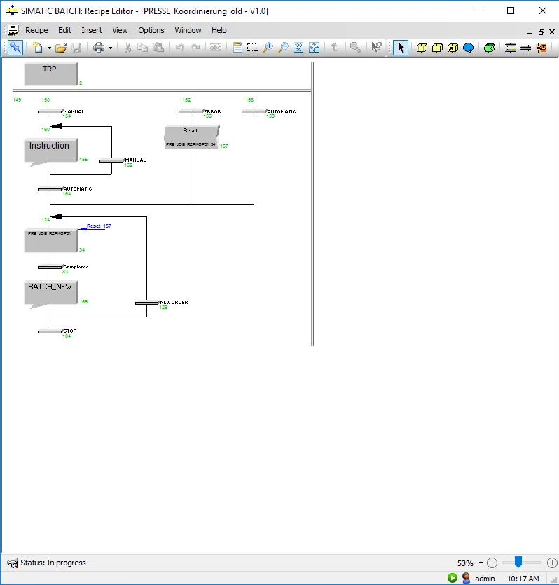
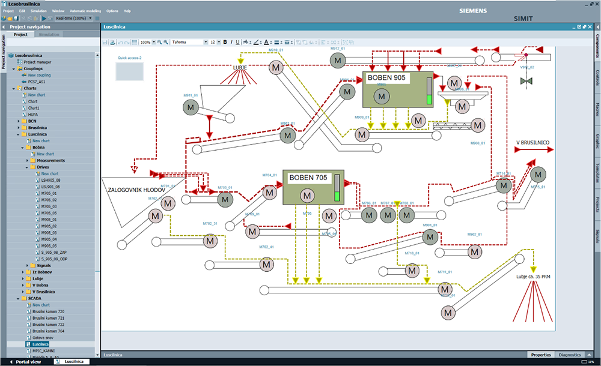
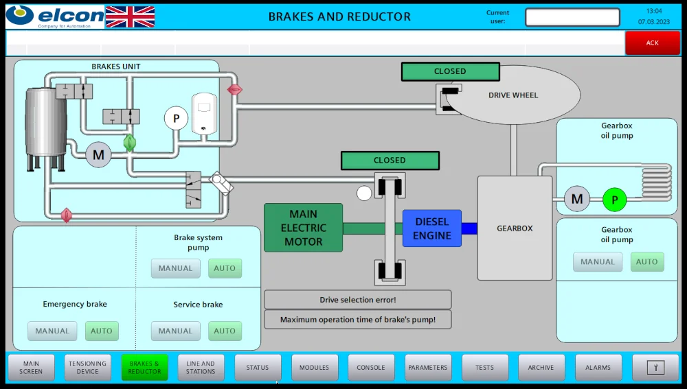

Original Siemens blocks, wherever possible.
We stay as close as possible to the rules of the PCS7 system: original Siemens blocks, channel drivers linked automatically to module drivers, tags and block icons generated automatically.
Where the user’s requirements cannot be met with Siemens functionality, we program our own blocks in Siemens SCL.

PCS7 applications
PCS7 is a Siemens DCS. Unlike conventional PLC and SCADA, the two are tightly integrated, with block libraries for sensors and actuators and automatic generation of alarms, tags, archive tags and block icons.
We build PCS7 systems from a single AS with a combined OS and ES station up to client-server structures with redundancy at AS and OS level, with F-Systems for safety. Computers usually run virtualised on VMware ESXi. Libraries: standard APL, Pulp and Paper APL and CEMAT.

SIMATIC Batch
In chemistry and food, processes are often batchwise. Recipes change parameters like step times and dosing quantities. When the order of steps must change too, we use SIMATIC Batch.
Recipes can have any number of steps with sequential, parallel or alternative branches. The programmer prepares the phases at AS level, the operator only builds the recipe.

Digital twin
Process applications are hard to test on site, and the customer wants production back as soon as possible. So we test on digital twins built in Siemens SIMIT, first internally in FAT and then with the customer.

TIA Portal applications
The TIA Portal is primarily for machines: a Siemens S7-1200 or S7-1500 PLC with a touch panel or SCADA. Speed matters, so servo positioning and high-speed counters are common, with safety integrated in the controller.
Smaller third-party devices are linked to PCS7 over S7 links, or through PN/PN couplers when the controllers are not Siemens.
Let’s talk about your plant.
Retrofit, new line or a system nobody can maintain anymore. Tell us what you are running and we will tell you how we would approach it.